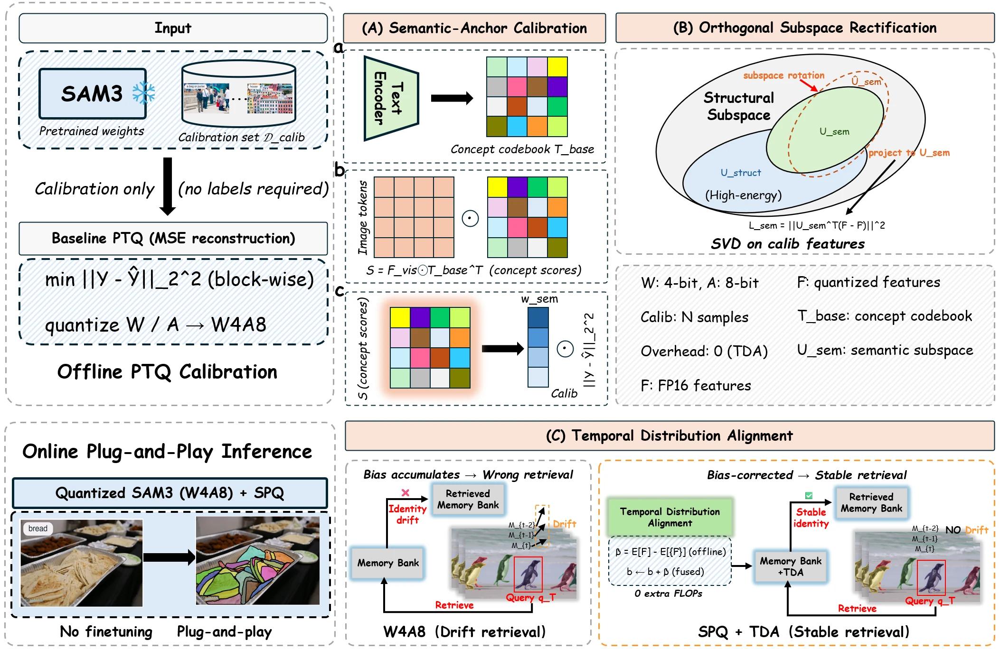
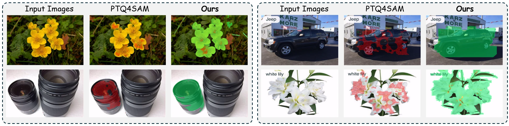
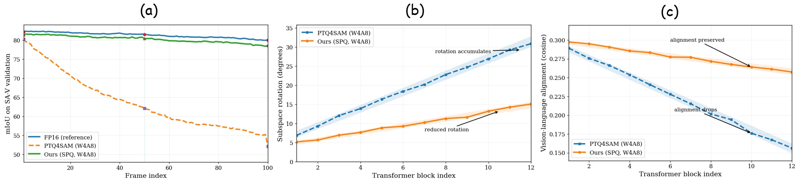

Semantic drift is the bottleneck.
Low-bit perturbations do not merely add numerical noise; they shift the prompt-conditioned semantic representation that SAM3 relies on for object localization.
PTQ4SAM3 preserves prompt-conditioned semantics during low-bit post-training quantization, keeping SAM3 accurate, compact, and fast across image and video segmentation.
Abstract
Segment Anything Model 3 extends promptable segmentation to image and video settings, but direct post-training quantization can severely distort the semantic pathways that connect prompts, object queries, and masks.
PTQ4SAM3 introduces a semantics-preserving quantization framework tailored to SAM3. It uses semantic-anchor calibration, orthogonal subspace rectification, and temporal distribution alignment to correct concept drift without retraining the full model.
Three claims
Low-bit perturbations do not merely add numerical noise; they shift the prompt-conditioned semantic representation that SAM3 relies on for object localization.
Semantic anchors provide task-aligned calibration signals, preserving the relation between visual tokens, prompt embeddings, and mask predictions.
Temporal distribution alignment keeps quantized representations consistent across frames, avoiding flicker while retaining compression and speed benefits.
Method
Representative prompt-object pairs calibrate activation ranges around the semantic subspaces that matter for segmentation.
Quantization error is decomposed and corrected away from the semantic anchor direction, reducing destructive drift.
Video-frame distributions are aligned so the quantized model stays coherent across time as well as across prompts.

Semantic Preservation Objective
minimize semantic drift while enforcing W4A8 quantization constraints
Results


Why it matters
For foundation segmentation models, the expensive parts of inference are also the parts that carry semantics. Treating quantization as uniform numerical approximation can miss the representation drift that actually changes masks.
PTQ4SAM3 keeps the post-training workflow practical while making the calibration signal respect prompts, objects, and temporal consistency.
Citation
If our work is helpful to your research, please consider citing PTQ4SAM3. Thank you.
@misc{xiao2026ptq4sam3,
title = {PTQ4SAM3: Semantics-Preserving Post-Training Quantization for Segment Anything Model 3},
author = {Xi Xiao and Yunbei Zhang and Lin Zhao and Janet Wang and Yanshu Li and Chenrui Ma and Pan Wang and Yuqi Li and Fuchen Li and Tianyang Wang and Xiao Wang},
year = {2026},
note = {Project page: https://xixiaouab.github.io/PTQ4SAM3/}
}